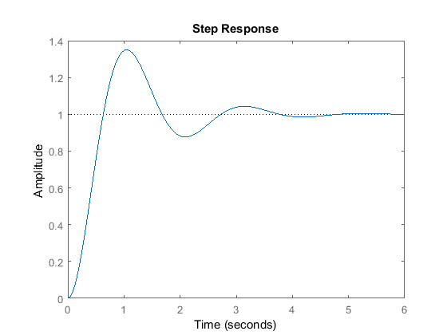
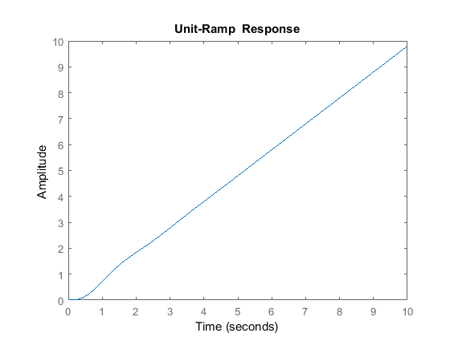
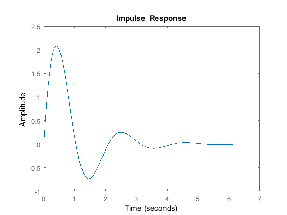

Contents
ELEC 360 --- Assignment 1
All matlab code and calculations will be verified using matlab even though I have the solutions manual lol. "Global Variables" --- Used in multiple questions
syms s t w a format compact
Question 1 (A) -- Laplace Transforms
f1 = t^2 laplace(f1) f2 = sin(w*t) laplace(f2)
f1 = t^2 ans = 2/s^3 f2 = sin(t*w) ans = w/(s^2 + w^2)
Question 1 (B) -- Inverse Laplace Transforms
F1 = 1 /(s+a)^2 ilaplace(F1) % i) F2 = (s+a)/((s+a)^2)+w^2 % prof messed up the question ilaplace(F2) % ii) F3 = (s+3)/(s+1)^3 % iii) F3 = partfrac(F3) ilaplace(F3)
F1 = 1/(a + s)^2 ans = t*exp(-a*t) F2 = 1/(a + s) + w^2 ans = dirac(t)*w^2 + exp(-a*t) F3 = (s + 3)/(s + 1)^3 F3 = 1/(s + 1)^2 + 2/(s + 1)^3 ans = t*exp(-t) + t^2*exp(-t)
Question 2 --- Transfer function of electric circuit
syms R1 R2 L C i1 i2 ei eo ei = R1*i1+L*diff(i1-i2) laplace(ei) eo = -1/C*int(i2) laplace(eo) % ill-suited for matlab, just looked at the solutions manual,
ei = L + R1*i1 ans = L/s + R1/s^2 eo = -i2^2/(2*C) ans = -1/(C*s^3)
Question 7 B-5-10
Remember that the ramp response is the integral of the step response. Thus, you can multiply the step response by 1/s and you get the ramp.
s = tf('s'); C = 10; R = s^2+2*s+10; step(C/R) % Step response
ramp response
%use help timeoptions h = stepplot(C/(R*s)) p = getoptions(h); p.Title.String =('Unit-Ramp Response'); p.Ylim = [0 10]; p.Xlim = [0 10]; setoptions(h,p);
h = resppack.timeplot
impulse response
h = impulseplot(C/R)
p = getoptions(h);
p.Title.String =('Impulse Response');
setoptions(h,p);
h = resppack.timeplot